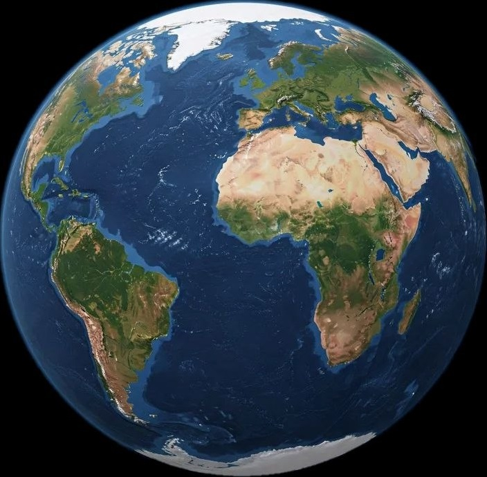

Earth is the third planet from the Sun and the only known planet that supports life. It formed around 4.5 billion years ago and has a balanced environment that allows living organisms to survive. Earth has one natural satellite, the Moon, which affects tides and stabilizes the planet’s rotation.
About 71% of Earth’s surface is covered by oceans, seas, rivers, and lakes. Water is essential for all forms of life. Earth’s atmosphere is mainly composed of nitrogen and oxygen and protects life from harmful solar radiation. The atmosphere also helps regulate temperature and weather patterns around the world.
Earth is home to millions of species of plants, animals, and microorganisms. Its moderate temperatures, liquid water, and oxygen-rich atmosphere make life possible. Humans have developed civilizations, technologies, and cultures across the planet. Scientists study Earth to better understand climate change, ecosystems, and how to protect the environment for future generations.
Earth is the only known planet that supports life because it has liquid water, a protective atmosphere, and suitable temperatures. The atmosphere protects living organisms from harmful radiation and helps maintain a stable climate. Earth also has a strong magnetic field that protects the planet from dangerous particles coming from the Sun. These conditions make Earth unique among all the planets in the Solar System.
More than seventy percent of Earth’s surface is covered by oceans, which play an important role in regulating climate and supporting marine life. Earth is constantly changing because of natural processes such as volcanic eruptions, earthquakes, and the movement of tectonic plates. Human activities also affect the planet through pollution and climate change. For this reason, many scientists encourage people to protect the environment and use natural resources responsibly.
